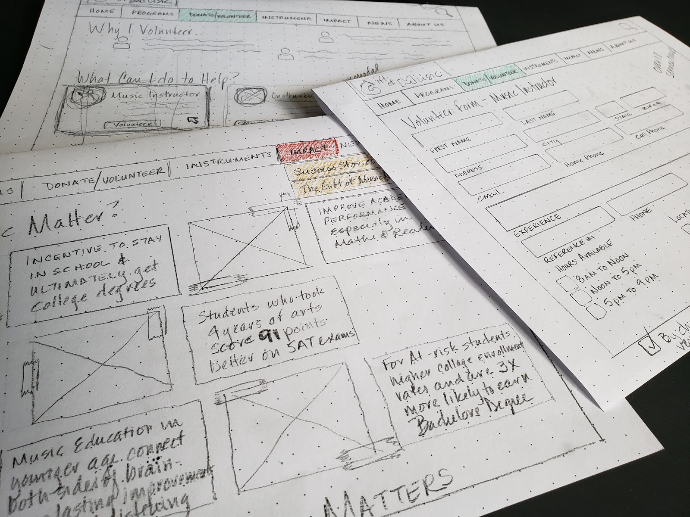
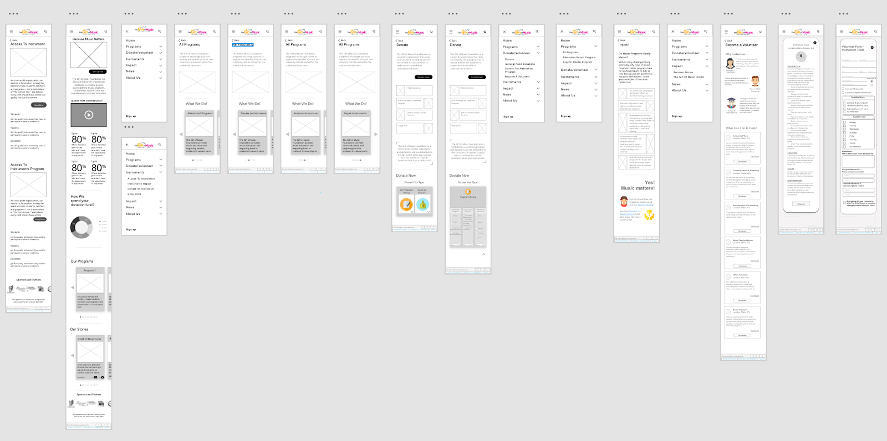

Project Summary
This challenge was a three week project to go through the entire UI/UX design process to understand the current challenges of The Gift of Music Foundation, what user thoughts and pain points are with local charities and to incorporation that feedback into a redesign of the information architecture to create an improved user experience. Ultimately, we want to drive more awareness of the charity’s mission — Because Music Matters — and increase awareness and engagement.

User Interviews
Through a series of one-on-one interviews and an online survey, we learned that potential donors and volunteers are drawn to organizations in which they have a personal connection to themselves or a family member. The biggest challenges they face when deciding on a charity to support is understanding how their donation is being used and what the donation/volunteer opportunities are with the charity.
When it comes to funding being cut for Arts Programs in schools — like music programs, our respondents felt strongly that those programs should not be cut from school budgets. However, they were not compelled to support charitable programs to support music in schools because they felt that there were more pressing needs to be met, like homelessness, hunger and childhood diseases.
It is important to note that we made several attempts to connect with The Gift of Music Foundation to get their point of view on their challenges and successes but we were unable to explore these issues with The Gift of Music.
Pain Points
Our research uncovered a simple truth — The Gift of Music Foundation is failing to make a connection with donors who do not have a close connection to school music programs.
While user reviews of The Gift of Music Foundation are high, they almost solely come from the clients that they serve. A competitive analysis of other non-profit music programs online show that other organizations do a great job of telling a compelling story to draw people into their site with captivating visuals and success stories that touch your heart.
We also observed that the casual user would have a hard time understanding the opportunities that they have to support the Gift of Music. An integral part of their support program allows parents and students to rent musical instruments with The Gift of Music and a portion of those rental fees provide ongoing support.
Affinity Mapping
To make the connections in the research that we conducted, we completed an Affinity Diagram to map out the connections in the data.

We were able to group the user feedback into an affinity diagram and these were the primary categories:
- Connection to charity
- Where to find information
- Personal impact
- Information needed
- Donation pain points
- Challenges
- Motivation to continue
- Suggested donation levels
- Donation frequency
Personas

Bryon Liaco is a client that would be a benefactor of The Gift of Music Foundations services for his children.

Mona Wells is a potential volunteer who recently moved to the area and wants to share her music talents with at-risk children.

Dave Morgan is a potential donor who was an at-risk child himself and now that he has settled into his career, he wants to give back to children who are in need.
Customer Journey Mapping
Our customer journeys follow different paths so we created a different mapping for our donors, volunteers and clients (parents/students).


In each customer journey, we focused on the feelings and pain points each user would face and brainstormed on how we can design a website to mitigate those pain points and elevate those lows to highs. A majority of our pain paints stemmed from being unsure if they could find the information they needed to make a decision and that is where we focused our design efforts.
Design Solutions
Our priorities in our design focused on 3 main things — transparency, childhood enrichment and building trust.
Transparency — Our user research told us that people want transparency in how the programs at The Gift of Music work and how the money and other donations are put to use. People only want to give when they know their money is used to benefit the children and isn’t being spent on expensive overhead and salaries. We added this transparency by clearly showing on the home page how the money received is spent and by giving donors the option to allocate their funds to the parts of the program they want to support.
Childhood Enrichment — The defining moment in our research came when we learned that people didn’t see the true impact of The Gift of Music Foundation and their mission. User Research showed that programs like ours were often considered a luxury charity rather one that solved complex childhood issues. We combated this issue in our design by adding research and data to support how music programs enhance a child’s education. For example, at-risk children in music and art programs scored 91 points higher on the SAT exam that their at-risk peers.
Trust — User research let us know that people have a skeptical point of view when dealing with charities online. Our design motivation to solve this is to build a site that engages our potential users in a trustworthy manner. The overall tone and feel of the site should be professional but informative to build a sense of trust.
User Flow

Redesigning the user flow for the tasks on The Gift of Music website allowed us to improve the experience for the users. In the original design many of the common tasks like renting an instrument or finding information on how to support the foundation were difficult to find. Our redesigned flow made finding information on how to support The Gift of Music easier to find and clearer on what actions need to be taken.
Sketches
Creating paper prototypes allowed us to see our design concepts in real life and helped us think through the navigation and flow of the website redesign for The Gift of Music.
This paper prototyping process helped us think through any potential sticking points before we began developing our clickable prototypes. We were able to quickly adapt our design ideas and determine what works and what ideas needed additional improvements. For example, we determined that we needed to create a chart for donations to allow the user to direct their funds to the parts of the program that they wished to support.
Wireframes
In order to quickly test our design concepts, we created clickable low-fidelity wireframes so that we could test our theories with potential users.
These low-fidelity prototypes were used to test our theories with users to determine if our navigation, flow, and functional concepts where understood by our users. We found that we needed to clarify the charts and form in the original design but the overall flow of the site was easy to use and understand without explanations.
Visual Design

Our visual design concept is to highlight the joy of children and music and to provide a sense of trust and confidence. We chose green as our main color palette as green evokes a feeling of abundance and a plentiful environment while providing a restful and secure feeling. Greens evoke emotions of safety (important for parents), stability (important for volunteers) and reliability (important for donors).
Prototype

Our final prototype of the site was well received by our testers. Most of them have been with us throughout the project and they liked the final version of the prototype and agreed that it was more pleasing and provided them with the information that they were looking for in an easy and concise manner. Future iterations will build on the design concepts and functionality of this prototype.
Conclusion
Overall, this project opened our eyes to the challenges that many non-profits faced today. They have to struggle to balance their mission and the ongoing support they provide their clients with appealing to donors and volunteers. Our user research helped us understand that if you don’t stress the importance of why your program exists over what they do, you can alienate a portion of your donor pool. Without that “why?” many donors will move on to charities that they feel fill a more critical need.
The most challenging part of this project was the lack of access to the Foundation’s founders and key stakeholders. We did the best we could with secondary research on the industry and comparing their past press releases to their current offerings to see what has changed. Combining this secondary with competitive research and the findings from our user research allowed us to hypothesis at the challenges that they face and how we can design options to mitigate those challenges.